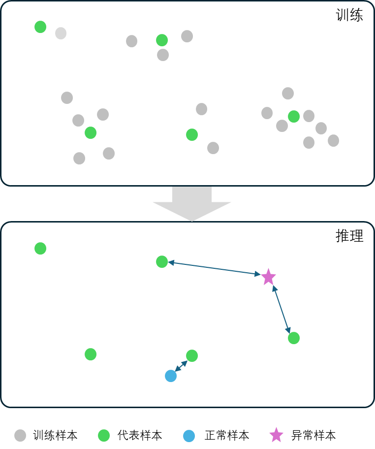
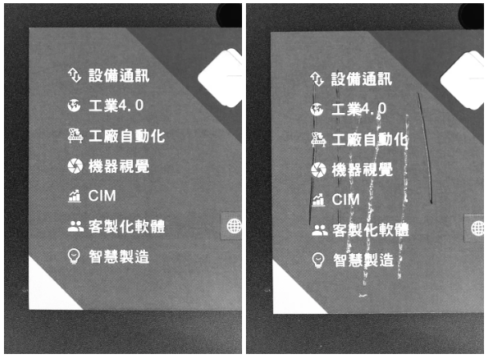

EL非监督分割白皮书#
副标题：5张OK图、一分钟建模、半小时落地的异常检测工具。
引言#
随着工业4.0的推进，制造业对产品质量的要求日益严苛，传统人工质检和基于规则算法的视觉检测系统已难以应对复杂多变的工业场景。在很多场景中，缺陷形态随机、良品率高、检测精度要求严苛，传统的有监督的AI检测方法面临缺陷样本不足、泛化能力弱等挑战。基于良品的异常检测技术可以实现仅依赖正常样本即可实现异常检测，在工业视觉领域取得重要的突破，大大提升了AI检测系统的实用性，缩短了落地周期，降低了落地成本。
然而，在过去的一些基于良品学习的工具，在实际应用过程中仍面临技术实现、工程落地等维度的技术与工程挑战。如何进一步降低产品质量检测方案的实施成本和提高落地效率，仍然是一个重要的问题。
技术背景#
当前，产业界已经在基于良品检测相关的技术路线和解决方案方面做了很多探索并提供了不少解决方案。但这些解决方案仍然面临下面一些问题：
一、技术实现层面的挑战#
首先，在技术实现层面，当前产业界使用的良品学习的无监督方法主要包含缺陷仿真和合成、基于正常图像重构、特征蒸馏等技术路线，尽管这些无监督学习方法规避了依赖缺陷样本、缺陷数据收集困难的问题，但其检测效能仍受相关技术路线固有缺陷的制约。
为了解决缺陷数据难以收集的问题，一种路线是，通过缺陷仿真与合成技术来生产伪缺陷数据，例如扩散模型和生成对抗网络（GAN）等技术，这些方法生成的缺陷样本生成虽能实现视觉真实感，但其分布特性易偏离实际生产缺陷的统计规律：过度分散的合成分布可能与正常数据波动边界重叠导致过检，而过度集中的分布则可能遗漏常见缺陷类型。此外，缺陷合成受限于人工先验认知和已有的缺陷数据量，难以覆盖因工艺参数波动或材料差异引发的高度不可预测性缺陷形态，导致模型无法检出真正未知的异常。
为了规避合成缺陷数据的问题，真正只使用良品数据来建模，业界探索了基于图像重构的方法（如自编码器、变分自编码器），这些方法通过仅使用良品数据训练模型。通过模型能够较好重建良品图像而无法重建未知缺陷的原理实现检测异常。但工业场景中光照变化、材料表面的自然随机纹理等噪声源易引发误判；且多部件复杂产品（如精密仪器组件）的全局-局部特征协同表征能力不足，导致细微缺陷检测敏感度受限。
此外，相关研究领域也尝试了基于特征蒸馏的技术，但这方面的技术面临跨场景适配挑战：教师模型的知识迁移偏差源于训练数据与目标场景工艺参数（如材料类型、温湿度）的不匹配， 导致数据特征可能存在较大差异而引发教师网络本身失效。
二、模型训练成本与项目落地效率的矛盾#
其次，工具的落地效率也是影响相关解决方案的实用性的重要因素。
为了适应复杂工业场景的不同需求，现有解决方案普遍采用深度学习架构（如Transformer、多尺度特征融合网络、YOLO网络等），并需要针对具体的场景数据进行完整的训练，需要较长的训练时间和较为昂贵的训练资源。例如，以ResNet-50为基础网络的模型在单GPU环境下完成单次训练需4-6小时，完成一个项目的检测效果的验证迭代周期长达8小时。而随着现代工业的发展，部分行业对柔性生产线的需求越来越高，产品换型速度快、批量小， 这给检测设备的换型建模速度提出了更高的要求。一些场景中，从获取新型号良品样本到部署检测模型的窗口期通常不足24小时，而传统建模流程（数据采集-标注-训练-验证）需耗时3-5天，这样的解决方案无法适应灵活变化的现代柔性生产线。此外，这些需要大量训练的解决方案需要配置较为昂贵的训练专用GPU服务器，进一步提高了工厂的建模成本。
三、复杂多样的需求场景与工具易用性的矛盾#
最后，实际工业场景往往复杂多样，为了应对多样化的场景和需求，现有的工具往往提供了多样化的参数供使用者根据具体场景调整适配，例如训练策略、检测阈值、数据增广方案等，这极大增加了工程师上手使用的学习成本，提高了相关解决方案的交付难度。
新的解决思路：EL非监督分割#
为了解决上面这些问题，为产业界提供更好的解决方案，阿丘科技总结过去各种技术路线的优点和存在的问题，开发了全新的使用非监督分割技术的 EL异常检测工具（Edge Learning Anomaly Detection）——EL非监督分割工具。
EL非监督分割工具专注于提供一个快速、高效、低门槛的异常检测解决方案，它的具体特点是：
快速：只需要 极少的良品数据，极快的训练速度，极致的建模效率；
高效：高效建立模型、高效完成项目验证、极高的落地效率；
低门槛：训练不需要GPU，使用不需要懂AI。
为了更加清晰地说明EL非监督分割工具的具体特点，下面附上EL非监督分割工具与阿丘科技已有的有监督分割工具、非监督分割工具的各项指标的对比数据：
对比维度 |
有监督分割工具 |
非监督分割工具 |
EL非监督分割工具 |
|---|---|---|---|
所需总样本数量 |
30张 |
30张 |
5张 |
所需NG样本数量 |
30张 |
0张 |
0张 |
标注难度 |
高 |
低 |
低 |
调参复杂度 |
高 |
高 |
低 |
训练效率 |
30分钟 |
30分钟 |
1分钟 |
推理效率 |
30毫秒 |
25毫秒 |
80毫秒 |
最小检测能力 |
3 pixel |
5 pixel |
10 pixel |
检出缺陷精细度 |
精细 |
精细 |
粗糙 |
（注：表格中数据仅为同等问题下的可比示例，不代表某一任意场景下的实际指标。）
EL非监督分割工具在易用性、验证和落地效率方面有极大的优势，且检测效果也更直观、可预测。虽然目前在推理速度、检出缺陷的边缘精准度方面，相对原有的分割工具还略有差距，但对于检测节拍和检出缺陷精细度要求不高的场景，尤其是需要防大漏的场景，使用EL非监督分割能够极大提高验证速度和落地效率，并取得稳定的检测效果。
技术原理和优势#
为了实现EL非监督分割工具的快速、高效、低门槛的能力，阿丘科技重新回顾了已有的各种技术路线，开发了新的基于样本比对的算法方案。它的基本原理是：训练时，算法会根据训练样本的分布情况，自动从用户给定的训练样本中选择一些具有代表性的样本记录到模型中。在推理时，算法会将待检测的样本与训练时选取的具有代表性的样本逐一进行对比，计算待检测样本与训练集中代表性样本的差异大小。与所有代表样本的差异都足够大的样本就有较大概率是存在异常的样本。

这一技术路线给这个工具带来了以下优势：
训练速度快：这个方法避免了一般AI算法需要多轮迭代进行梯度下降的问题，不再需要重复学习样本特征，而只需要学习一遍训练样本的特征即可，这极大地提高了训练速度；
低门槛：我们从算法原理上极大地减少了训练模型的整体计算量，降低了对计算资源的需求，从而实现即使没有GPU也可以快速完成训练；
直观：由于算法基本原理是直接在训练样本和推理样本之间进行比对，这与人类认知缺陷的思想是一致的，因此，检测效果更符合人的直观感受，更容易调整参数来控制过漏检情况。
典型应用场景#
EL非监督分割工具适用于各种OK样本一致性较好，没有各种复杂的随机变化的场景。
印刷质量检查：印刷品中可能出现墨迹污染、错印、漏印、重印等问题；这类场景良品一致性好，产品换型可能较快，使用其他需要复杂训练的工具存在换型后建模时间久的问题；使用EL非监督分割工具可以快速建模，能够检测任意未知的印刷质量问题。

磁材等原材料表面缺陷检查：磁材等原材料表面可能出现压痕、划伤、脏污、变形以及其他未知缺陷等异常，可以使用EL非监督分割工具来检测材料表面的异常情况。
PCB板焊点检测：焊点虚焊、桥接、元件偏移等缺陷形态多样，但良品样本一致性高。EL工具通过比对训练样本中的焊点形态分布，可快速识别超出正常波动范围的异常，且建模时间从传统方法的数小时缩短至分钟级。
未知异常防漏：生产线中受到环境、生产工艺、人员操作等各种因素影响，随时可能发生低概率事件导致的未知异常。使用一些有监督的检测方法难以处理这些未知因素带来的未知异常。EL非监督分割工具能够基于良品数据快速建模和部署未知缺陷检测解决方案，帮助做好生产线的未知风险控制。
关键技术指标#
EL非监督分割工具的具体检测能力指标如下：
参数维度 |
指标 |
备注 |
|---|---|---|
配准误差要求 |
建议20pixel以内 |
配准误差 < 最小缺陷截面宽度的3倍。 |
最小可检测缺陷 |
10pixel |
缺陷截面宽度占图像待检区域比例 > 0.75%。 |
可同时检测型号数 |
3 |
|
检出缺陷区域边缘误差宽度 |
1~2倍 |
|
训练时间 |
1min |
与训练集样本数成正比例关系。 |
单图推理时间 |
80ms~200ms |
与图像大小、检测精细度、配准误差、代表样本数量成正比关系。 |
显存占用 |
1G~4G |
与图像大小、检测精细度、配准误差、代表样本数量正相关。 |
总结与展望#
EL非监督分割工具能够应用在大量的工业场景中，尤其在对检测缺陷边缘精细度要求较低但需要快速部署的场景中表现优异。结合轻量化边缘计算设备，能够极大降低异常检测解决方案的部署成本。针对高精度检测需求，可探索与EL非监督分割工具互补的混合架构，例如将EL非监督分割工具用于初筛，再结合有监督模型进行细粒度分类，从而在落地效率与精度间取得更优平衡；或使用有监督检测工具检测多数已知类型的异常，实现对异常的分类，配合使用EL非监督分割工具防范未知异常漏检，弥补其他工具对未知异常检测能力较弱的问题。
在工业质检领域，EL非监督分割工具展现出的技术价值不仅体现在单一场景的降本增效上，更构建了面向智能制造的柔性技术框架。其核心优势在于通过新的技术路线突破传统AI算法训练成本高、周期长的问题，结合边缘计算的轻量化部署能力，使AI质量检测得以在资源受限环境中更快速地落地和普及。